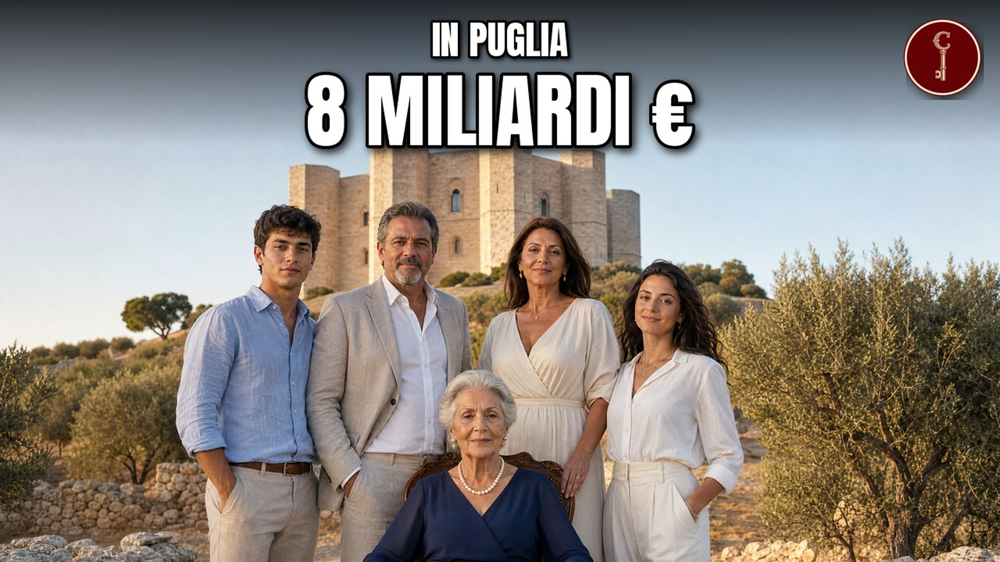

Puglia
Le 15 famiglie baresi e pugliesi più RICCHE (una ha inventato l'Amuchina)

Il video esce su YouTube a breve.
Fonti della ricerca
- Affaritaliani, Apulia Distribuzione e Rossotono, rilancio dell'agroalimentare italiano
- Affaritaliani, Maiora, Cannillo presenta il bilancio di sostenibilità
- AGI, «La storia di Borgo Egnazia, dalle origini al G7» (Viviana Minervini, 12/06/2024)
- AGI, «Storia e varianti del caffè con ghiaccio, la bevanda dell'estate salentina» (Alberto Ferrigolo, 12/08/2023)
- AGI, satellite Sitael in orbita con SpaceX di Elon Musk (05/12/2018)
- Aston Martin, "Aston Martin expands presence in Italy with launch of Aston Martin Rome"
- Atoka, F. Divella Spa | Produzione di prodotti farinacei a Rutigliano | Dati e Contatti
- Atoka, Egnathia Iniziative Turistiche E.I.T. S.p.A.
- Atoka, «G.t.s. - General Transport Service Spa | Movimentazione merci relativa a trasporti ferroviari a Bari | Dati e Contatti»
- Automoto.it, Gruppo Maldarizzi
- Avvenire, In Alto Adige tutti vogliono salvare le acciaierie Valbruna, ma c'è chi rema contro
- Aziende.it, «Quarta Caffè S.p.A.»
- Aziende.it, Ladisa S.r.l.
- Aziende.it, Megamark S.r.l. – Trani (BT)
- BeBeez, Nicolaus Tour si finanzia con un minibond da 10 mln euro. Lo sottoscrive tutto UniCredit
- Beverfood.com, «Quarta Caffè S.p.A.»
- Beverfood.com, «QUARTA CAFFE’: nasce la linea Edo Quarta Specialty Coffee» (21/09/2016)
- Beverfood.com, «Quarta Caffè: beni di conforto per la popolazione ucraina» (Mariapia De Nicola, 03/03/2022)
- Borgo Egnazia, Bilancio di sostenibilità 2023
- Borsa Italiana, Industrie De Nora - Profilo società
- The Brussels Times, «EU clears Siemens takeover of MerMec in rail tech deal scrutiny»
- Bühler Group, «Rethinking pasta» (Janet Anderson, giugno 2025)
- Bühler Group, Pasta e passione! For 130 years
- Business Wire, Natuzzi Announces Financial Results for the First Quarter of 2026
- Camera dei deputati, XIII legislatura, Resoconto stenografico seduta n. 506 del 17 marzo 1999 (interrogazione 3-03598)
- Cassa Depositi e Prestiti, Comunicato stampa n. 108 del 15/09/2020 (Andriani)
- Cassa Depositi e Prestiti, «Da Crédit Agricole Italia e CDP 34 milioni con Garanzia SACE al Gruppo Andriani per un nuovo stabilimento in Nord America» (05/07/2023)
- Company-Histories.com, "Industrie Natuzzi S.p.A. Company History" (da International Directory of Company Histories, 1997)
- CompanyReports, Fatturato aziende nella Provincia di Bari
- CompanyReports, Fatturato aziende nella Provincia di Brindisi
- CompanyReports, Fatturato aziende nella Provincia di Lecce
- De Nora, The beginnings of Oronzio De Nora (Centennial)
- De Nora, Amendment and renewal of shareholders' agreement
- De Nora, Relazione annuale integrata 2025
- De Nora, Shareholding
- Despar, Innovazione e qualità: la ricetta di Maiora (informazione pubblicitaria)
- la Repubblica, Album Top 300 Puglia e Basilicata: Imprese più floride in Puglia e Basilicata, fatturati in crescita ma pesano i rincari
- Divella, Storia - Divella
- EconomyUp, "Open innovation, Megamark: il colosso del Sud che compra startup"
- Ecoseven, Francesco Divella: “Fatturato 2020 sopra quota 300 mln, ora attratti anche da Cina”
- ELITE, GTS Holding, Transport Efficiency and Environmental Protection
- European Tour, «Sergio Melpignano 1946-2015» (settembre 2015)
- Fedaiisf, La storia di Oronzio De Nora, l'inventore dell'Amuchina (ripresa da Onofrio Bruno, Gazzetta del Mezzogiorno)
- Foodweb, Divella: una storia di successo e passione mediterranea dal 1890
- Forbes Italia, Il miliardario francese Arnault in visita nelle aziende del Salento dove si produce Dior
- Forbes Italia, Casillo, l'azienda che lavora il grano del 70% della pasta italiana
- Forbes Italia, De Nora, margini record e cassa solida, ma ordini più deboli frenano il 2026
- Forbes Italia, De Nora sbarca in Borsa (capitalizzazione 2,7 miliardi)
- Forbes Italia, Gruppo Nicolaus: Giuseppe e Roberto Pagliara
- Forbes Brasil, Casillo, a família que processa o trigo de 70% das massas italianas
- Fortune Italia, Intelligenza artificiale su rotaia: la storia di Mermec
- Fortune Italia, «Andriani diventa una multinazionale: inaugurato il primo stabilimento produttivo in Canada»
- Gambero Rosso International, «All about the tradition of mixing coffee and ice in Italy and the rest of the world» (Michela Becchi, 31/03/2021)
- GTS Logistic, Storia
- Gulfood, Exhibitors - Siciliani S.p.A.
- American Home Furnishings Hall of Fame, "Pasquale Natuzzi"
- Hospitality Net, Azora Acquires Bluserena, Italy's Second Largest Resort Hotel Operator
- ICE Agenzia, «Andriani S.p.A. Benefit Corporation opens first North American production plant» (29/10/2025)
- Andriani S.p.A., brochure aziendale per PLMA Amsterdam 2023 (pubblicata da ICE Agenzia)
- Il Foglio, Dal barolo Gedi alle orecchiette. Il gruppo Ladisa punta Huffington post e La Sentinella del Canavese
- il Nord Est, Addio a Nicola Amenduni, è morto il re dell'acciaio
- il Nord Est, L'incontro con Enrico Mattei, Gianni Agnelli e Giovanni Paolo I. Il viaggio da Bari a Vicenza per amore di Mariù: chi era Nicola Amenduni
- Il NordEst, Valbruna resta a Bolzano, accordo con la Provincia
- Il Post, «Che posto è Borgo Egnazia, dove si terrà il G7» (12/06/2024)
- Il Post, "La crisi di Natuzzi ha qualcosa di simile a quella di Stellantis"
- Poste Italiane, Comunicato – Emissione di un francobollo dedicato a F. DIVELLA S.p.A., nel 130° anniversario della fondazione
- il Resto del Carlino, Morto a 103 anni l'imprenditore Nicola Amenduni. Zaia: "Il Covid se l'è portato via"
- Il Tacco di Bacco, «Break on History» a Casa Quarta, Lecce (evento del 12/04/2026)
- Inforcapital, «Andriani partecipata da Nuo ottiene un finanziamento in pool da 55 mln euro da Crédit Agricole Italia e CDP con garanzia SACE» (23/08/2026)
- Interempresas, Fallece Nicola Amenduni a los 103 años
- Interni Magazine, «Savelletri di Fasano: Borgo Egnazia» (15/07/2013)
- Intesa Sanpaolo, Intesa Sanpaolo: 50 milioni di euro con Garanzia Futuro di SACE a Casillo S.p.A. per innovazione e sviluppo sui mercati internazionali
- Cassa Centrale Banca, comunicato stampa del 9 gennaio 2025 sul Gruppo Casillo
- ItaliaOggi, Distribuzione, Megamark rafforza il Sud. Investimenti da 180 milioni di euro
- ItaliaOggi, "Natuzzi, ecco le tappe del rilancio dello storico marchio made in Italy"
- ItaliaOggi, «Telenorba, trattive per l’acquisizione da parte di Ladisa in fase avanzata»
- L'Italo-Americano, «Caffè Salentino: almond, ice, and the spirit of Puglia in a glass» (Chiara Dalessio, 10/06/2025)
- Italy Specialty Coffee, «Edo Quarta Coffee Roasters»
- La Capitale News, «Telenorba verso la cessione, offerta da oltre 17 milioni di euro: la televisione pugliese può cambiare proprietario»
- La Conceria, Casarano resists: accessories squeezed by crisis and recovery
- La Conceria, After shoes and bags, Filograna now thinks about clothing
- La Conceria, «We are reorganising Green Seagull to be ready for the restart»
- La Conceria, Luxury isn't stopping, Leo Shoes takes advantage and reaches 200 million
- La Conceria, LVMH is to buy Leo Shoes? Filograna’s denial is firm
- Ladisa Ristorazione, home page
- Ladisa Ristorazione, Storia
- London Economic Development Corporation, «Andriani announces official opening of first North American production plant in London, Ontario» (16/10/2025)
- Il Libro Possibile, "Francesco Casillo" (scheda ospite)
- Maldarizzi Automotive, "Chi siamo"
- Maldarizzi Automotive, Company Profile 2025
- Marguerite (comunicato), «Marguerite closed the acquisition of a minority stake in GTS group» (Luxembourg / Bari, 09/09/2021)
- MarketScreener, Pasquale Natuzzi: banen, relaties en netwerk
- MF Milano Finanza, Natuzzi sceglie Aldo Uva come ceo
- MF Milano Finanza, Le Acciaierie Valbruna risentono dei prezzi in calo
- MF Milano Finanza, Questione di chimica
- MF Milano Finanza, «Nicolaus su accordo di cessione»
- MLex, Siemens Mobility's Mermec railway deal secures EU merger clearance
- Modaes, LVMH sigue invirtiendo en producción y ultima la adquisición de Leo Shoes
- Comune di Molfetta, Carta dei servizi della mensa scolastica (Ladisa)
- Money.it, Top 10 aziende di Bari per fatturato. I numeri del polo economico pugliese
- Motovario, Amenduni Nicola and Motovario (24/11/2010)
- Nicolaus, Chi siamo
- Open, «G7, il tour de force di Papa Francesco: 10 bilaterali in 7 ore. Dall'AI a Zelensky, ecco che cosa farà a Borgo Egnazia» (14/06/2024)
- Panorama, L'innovazione di Divella
- Panorama, «Felicia, la pasta healthy che si prende cura delle persone e dell'ambiente» (Giacomo Ferruti, 30/12/2025)
- Panorama, «L’importanza di vivere del nostro patrimonio unico» (Sara Magro, 29/06/2023)
- Panorama, "Pasquale Natuzzi: il coraggio di essere imprenditori"
- PartitaIva.it, La classifica delle migliori imprese di Bari nel 2026: chi sono e quanto fatturano
- The Pennsylvania Gazette, «Passion and Pain in Puglia» (Alyson Krueger, 23 giugno 2020)
- Frontiere (Politecnico di Milano), Amuchina and Polichina: a century-long history
- Port of Rotterdam, GTS starts direct rail connection between Bari and Rotterdam
- Qualitytravel, Valtur entra ufficialmente nell'albo dei marchi storici italiani
- Qualitytravel, Un anno della Valtur targata Nicolaus in cifre
- Quantisnow, Natuzzi (NTZ) earnings
- QuiFinanza, Casillo-Intesa Sanpaolo, 50 milioni per Altograno: obiettivo mercati internazionali
- Quotidiano.net Motori, "Lamborghini, nuova concessionaria a Bari che potenzia la rete in Italia"
- Quotidiano di Puglia, "Il romanzo di Pierini vince il Premio Megamark" (24/9/2022, p.17, rassegna Ecostampa)
- Registro Aziende, Dati aziendali: Leo Shoes Srl, P.IVA 04338410758
- Reportaziende, Apulia Distribuzione S.r.l.
- Retail Institute Italy, articoli su Apulia Distribuzione
- Shipping Italy, «Il 25% di Gts al fondo Marguerite: 120 Mln d’investimenti in 5 anni» (30/06/2021)
- Siciliani S.p.A., Chi siamo
- Siciliani S.p.A., Filiera bovina
- Siciliani S.p.A., Home
- Siemens, Siemens acquisisce le attività chiave di MERMEC per rafforzare il proprio portafoglio globale di tecnologia ferroviaria
- Il Sole 24 Ore, Borgo Egnazia becomes a brand: target 20 luxury resorts by 2029
- Startmag, Crai, Despar, Arena, Megamark e non solo, ecco come la GDO del Sud accelera
- Startmag, Acciaierie Valbruna, perché il governo interviene con il golden power
- Rai Superquark, Italia leader per i treni diagnostici (trascrizione, materiale RFI-PCTO, data servizio non indicata, caricato 12/2022)
- Teleborsa, A Siemens le attività di MER MEC nella diagnostica e segnalamento per il settore ferroviario (14/05/2026)
- Teleborsa, Natuzzi, avviata composizione negoziata della crisi
- Teleborsa, «Natuzzi, Aldo Uva entra nel CdA e assumerà la carica di CEO»
- TrasportoEuropa, «Gts strengthens its national rail offering»
- Università di Bari Aldo Moro, Invito laurea honoris causa Filograna
- Università degli Studi di Bari (materiale didattico, prof.ssa Anna Lucia Muserra), Bilancio caso di studio n. 2 - Maldarizzi Automotive S.p.A., "INFORMAZIONI SOCIETARIE"
- Università di Bari, "Giovanni Pomarico – Gruppo Megamark, short bio"
- Webull (ripubblicazione Business Wire/Barchart), Natuzzi Announces Financial Results for the Fourth Quarter of 2025
- We Wealth, La Ferrarina, figlia di un dio minore (e dell'Amuchina)
- We Wealth, "Il divano delle Murge che conquistò New York"
- Wikipedia, Acciaierie Valbruna
- Wikipedia (en), Air raid on Bari
- Wikipedia (en), "ASA 1000 GT Coupé"
- Wikipedia (EN), «Borgo Egnazia»
- Wikipedia (EN), «50th G7 summit»
- Wikipedia, Oronzio De Nora
- Wikipedia, Pasquale Natuzzi
- Wikipedia (en), Vito Pertosa
Attribuzioni di immagini e video
Locomotiva E.483.059 di GTS Rail con treno merci a Roma Tiburtina
Manny Mannheimer · CC BY-SA 4.0

Manny Mannheimer · CC BY-SA 4.0
Puglia bari old-town.jpg
Francesco Di Stefano 08 · CC BY-SA 4.0

Francesco Di Stefano 08 · CC BY-SA 4.0
Lecce , Puglia - panoramio (10)
Patrick Nouhailler's… · CC BY-SA 3.0

Patrick Nouhailler's… · CC BY-SA 3.0
Lecce, piazza sant'oronzo 01
Sailko · CC BY-SA 4.0

Sailko · CC BY-SA 4.0
Prime Minister Rishi Sunak attends the G7 Summit in Italy (53788635682).jpg
Number 10 · CC BY 2.0
.jpg){kind=link}
Number 10 · CC BY 2.0
2024-06-14 50th G7 summit 000150299
内閣官房内閣広報室 · CC BY 4.0

内閣官房内閣広報室 · CC BY 4.0
Group Photo (2)
Government of Japan · CC BY 4.0
.jpg){kind=link}
Government of Japan · CC BY 4.0
Lehman Brothers-NYC-20080915
Robert Scoble · CC BY 2.0

Robert Scoble · CC BY 2.0
Justin Timberlake - 2016 San Diego Comic Con International - 01
Gage Skidmore · CC BY-SA 2.0

Gage Skidmore · CC BY-SA 2.0
Jessica Biel - 352223240
Maggie · CC BY 2.0

Maggie · CC BY 2.0
Ex monastero di santa maria del piede, visuale da una finestra a strapiombo sulla gravina.JPG
Giusysysy · CC BY-SA 4.0

Giusysysy · CC BY-SA 4.0
Praest SBB Cargo 193 544 GTS Shuttle (54782394010)
Rob Dammers · CC BY 4.0
.jpg){kind=link}
Rob Dammers · CC BY 4.0
TrenItalia E656-248 Cargo (24462318239)
flybyeigenheer · CC BY-SA 2.0
.jpg){kind=link}
flybyeigenheer · CC BY-SA 2.0
E494 018 MIR
Manny Mannheimer · CC BY-SA 4.0

Manny Mannheimer · CC BY-SA 4.0
Locomotiva E.483.055 «Zoe» di GTS Rail a Pomezia
Manny Mannheimer · CC BY-SA 4.0

Manny Mannheimer · CC BY-SA 4.0
Casarano veduta.jpg
Freddyballo · CC BY-SA 3.0

Freddyballo · CC BY-SA 3.0
Alessano Panorama
Colar at Italian Wikipedia · CC BY-SA 3.0

Colar at Italian Wikipedia · CC BY-SA 3.0
A panorama of Ostuni 01
Maksimsokolov · CC BY-SA 4.0

Maksimsokolov · CC BY-SA 4.0
01080416Cervinia
ja:user:Kiyokun · CC BY-SA 3.0

ja:user:Kiyokun · CC BY-SA 3.0
"Eine charmante Hafenstadt".jpg
Holger Uwe Schmitt · CC BY-SA 4.0

Holger Uwe Schmitt · CC BY-SA 4.0
2019-10-10 Italy, Bari DSC 9022 DxO AF
Laurens R. Krol · CC BY 4.0

Laurens R. Krol · CC BY 4.0
Bari - caratteristica via della città vecchia - Vicolo che consente di raggiungere la Curia
Mafra2023 · CC BY-SA 4.0

Mafra2023 · CC BY-SA 4.0
Bari Vecchia 62105
Luistxo · CC BY-SA 4.0

Luistxo · CC BY-SA 4.0
Campagna di Rutigliano con ulivi.jpg
Nastoshka · CC BY-SA 4.0

Nastoshka · CC BY-SA 4.0
"1993 wurden die Sassi di Matera als einzigartiges Zeugnis der Grottenkultur von der UNESCO zum Weltkulturerbe erklärt". 01.jpg
Holger Uwe Schmitt · CC BY-SA 4.0

Holger Uwe Schmitt · CC BY-SA 4.0
LaScala Sofa by Claudio Bellini for Natuzzi Italia.jpg
ClaudioBelliniDesign · CC BY-SA 4.0

ClaudioBelliniDesign · CC BY-SA 4.0
New York Stock Exchange August 2017 02.jpg
Arild Vågen · CC BY-SA 4.0

Arild Vågen · CC BY-SA 4.0
Bari - Panorama dal lungomare
Lucamato · CC BY-SA 4.0

Lucamato · CC BY-SA 4.0
Lamborghini Huracan Evo, GIMS 2019, Le Grand-Saconnex (GIMS1010)
Matti Blume · CC BY-SA 4.0
.jpg){kind=link}
Matti Blume · CC BY-SA 4.0

Aston Martin DB12 1X7A1921
Alexander-93 · CC BY-SA 4.0

Alexander-93 · CC BY-SA 4.0
Rome Skyline (8012016319)
Bert Kaufmann from Roermond, Netherlands · CC BY-SA 2.0

Bert Kaufmann from Roermond, Netherlands · CC BY-SA 2.0
Palo del Colle - Chiesa del Crocifisso - 2024-09-27 11-35-07 002
Vitoansani2008 · CC BY-SA 4.0

Vitoansani2008 · CC BY-SA 4.0
Vacca podolica con vitello, a Pietrapertosa
Genky04 · CC BY-SA 4.0

Genky04 · CC BY-SA 4.0
Altamura
Baricarma · CC BY-SA 4.0

Baricarma · CC BY-SA 4.0
Polimi Leonardo campus main building
NuclearNiranjan · CC BY-SA 4.0

NuclearNiranjan · CC BY-SA 4.0
Photo A classroom of the "School of Isotopes", Politechnic of Milan 1960 - Touring Club Italiano 07 0335
Unknown authorUnknown author · CC BY-SA 4.0

Unknown authorUnknown author · CC BY-SA 4.0
ASA 1000 GT, la «Ferrarina», al Museo Ferrari
Rahil Rupawala · CC BY 2.0
.jpg){kind=link}
Rahil Rupawala · CC BY 2.0
Fondazione Oronzio e Niccolò De Nora
Sordelli · CC BY-SA 3.0

Sordelli · CC BY-SA 3.0
DeNoraQuotazioneInBorsa13
Industrie De Nora · CC BY-SA 4.0

Industrie De Nora · CC BY-SA 4.0
Bari-porto serale.jpg
manfrys · CC BY-SA 2.0

manfrys · CC BY-SA 2.0
Basilica Palladiana (Vicenza) - facade on Piazza dei signori
Didier Descouens · CC BY-SA 4.0

Didier Descouens · CC BY-SA 4.0
Bari - Lungomare Nazario Sauro - 202209302336
Federica.tamburini.75 · CC BY-SA 4.0

Federica.tamburini.75 · CC BY-SA 4.0
IMG7798 Acciaierie Valbruna Bolzano, Via Evangelista Torricelli, 2017-08
Aciarium · CC BY 4.0

Aciarium · CC BY 4.0
Corato - chiesa di San Giuseppe - 2026-09-13 23-07-51 001.JPG
FioreArchive · CC BY-SA 4.0

FioreArchive · CC BY-SA 4.0
Trani 061.JPG
Martin Stiburek · CC BY-SA 4.0

Martin Stiburek · CC BY-SA 4.0
Andria centro.JPG
Deblu68 · CC BY-SA 3.0

Deblu68 · CC BY-SA 3.0
"Im 12. Jahrhundert beherbergte Trani eine der größten jüdischen Gemeinden Süditaliens".jpg
Holger Uwe Schmitt · CC BY-SA 4.0

Holger Uwe Schmitt · CC BY-SA 4.0
Cathédrale Santa Maria Maggiore de Barletta.JPG
LPLT · CC BY-SA 3.0

LPLT · CC BY-SA 3.0
Vito Pertosa, presidente Mermec (2023)
Mario D Silvestri · CC BY 3.0

Mario D Silvestri · CC BY 3.0
N700 Series Shinkansen on Tokaido Line Tokyo March 2015
David Kernan · CC BY 4.0

David Kernan · CC BY 4.0
Berlaymont building Brussels
KenSwe72 · CC BY 4.0

KenSwe72 · CC BY 4.0
Eurospar di Lucera (FG).JPG
Michele Carpentieri · CC BY-SA 3.0
.JPG){kind=link}
Michele Carpentieri · CC BY-SA 3.0
Rossotono
Hpmachine · CC BY-SA 4.0

Hpmachine · CC BY-SA 4.0
Scene ricostruite
Alcune scene sono ricostruite con l'intelligenza artificiale (51 immagini e 9 clip). Non sono documenti né fotografie d'epoca.
Mappe
- Confini amministrativi italiani (openpolis/geojson-italy, dati ISTAT) · CC BY 4.0 · fonte